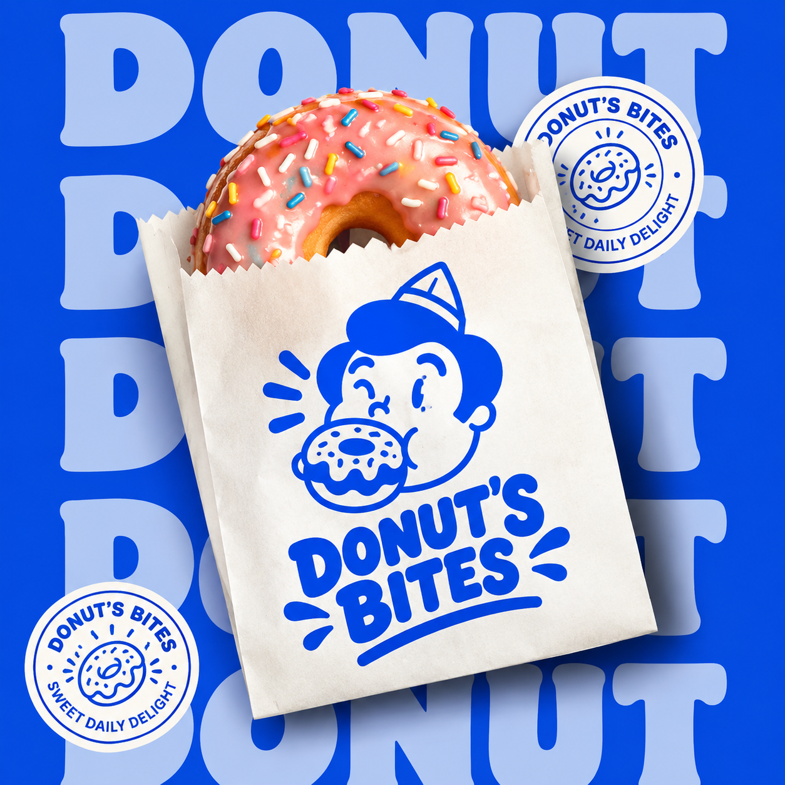

Una identidad visual creada para una marca divertida, fresca y juvenil, donde el personaje y la dona se convierten en protagonistas de una propuesta llena de color, energía y personalidad.
DONUT'S BITES se presenta como una marca de carácter divertido, fresco y juvenil. Su identidad parte de dos elementos protagonistas: un personaje y una dona, que juntos construyen un universo visual cercano y reconocible.
La propuesta visual busca que la marca pueda transmitir su personalidad desde el primer contacto, utilizando elementos gráficos capaces de generar reconocimiento y conexión.
El personaje y la dona funcionan como protagonistas de la identidad y permiten construir una imagen dinámica, expresiva y fácil de recordar.
La identidad de DONUT'S BITES se construye alrededor de una personalidad alegre y expresiva, donde el color, el personaje y la dona trabajan juntos para crear una experiencia visual atractiva.
Cada elemento visual fue pensado para reforzar la personalidad de DONUT'S BITES y mantener una comunicación coherente.
Una paleta vibrante que combina energía, frescura y un carácter juvenil.
La combinación tipográfica refuerza el carácter divertido y cercano de la marca.
El personaje funciona como uno de los elementos protagonistas de la identidad, aportando expresión y personalidad a la marca.
La dona se integra con el personaje para construir un recurso visual reconocible y directamente relacionado con la esencia de DONUT'S BITES.
El desarrollo visual permite llevar la identidad de DONUT'S BITES a diferentes piezas y espacios, manteniendo sus elementos principales como punto de reconocimiento.